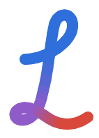

Your text is read right here in this page and never leaves it.
A text you check here is sent to the Litmus server and stored, as the notice beside Check says.
Loading the app
Litmus runs in your browser and needs JavaScript and WebAssembly.